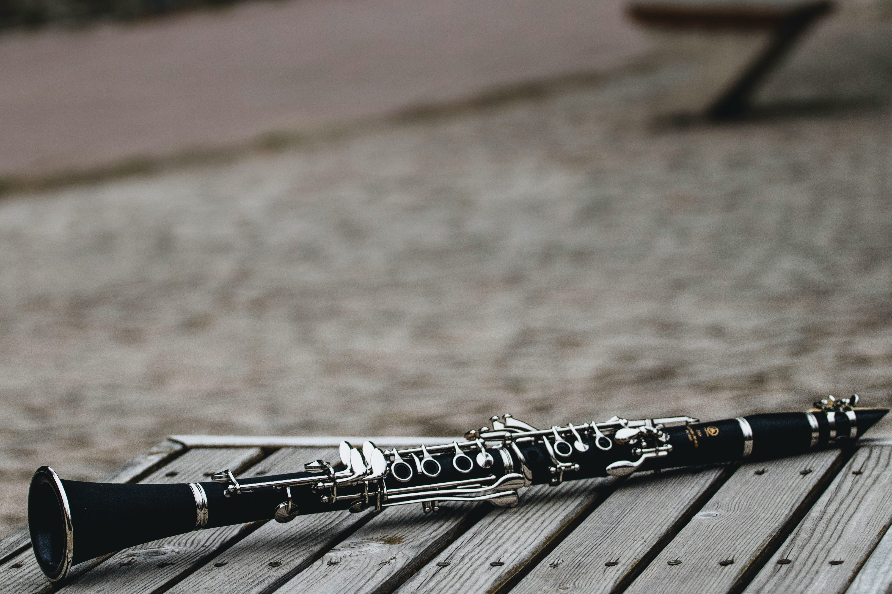
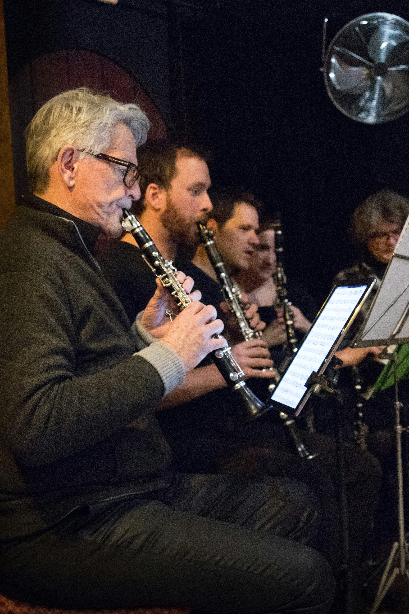

Description:
The clarinet is a woodwind instrument known for its smooth, warm, and flexible sound. It is commonly used in concert bands, orchestras, jazz groups, and chamber music. The main parts of a clarinet include the mouthpiece, reed, barrel, upper joint, lower joint, keys, tone holes, and bell. Its long cylindrical shape and dark body make it easy to recognize.

How to Play the Clarinet:
The clarinet is played by blowing air through the mouthpiece while a single reed vibrates against it. The player presses different combinations of keys and covers tone holes to change the notes. The sound is also affected by breath support, tongue position, and how the player controls the reed with the mouth.
